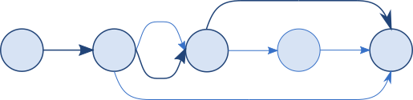

TMLPersistentContainer


Automatic shortest-path multi-step Core Data migrations in Swift.

A set of Swift extensions to Core Data’s NSPersistentContainerNSPersistentContainer and
NSPersistentCloudKitContainerNSPersistentCloudKitContainer that automatically detect and perform
multi-step store migration using the shortest valid sequence of migrations.
The library supports both light-weight and heavy-weight migrations, multiple
stores, progress reporting, and configurable logging.
Example
Minimally replace the call to NSPersistentContainer.init or
NSPersistentCloudKitContainerNSPersistentCloudKitContainer:
container = PersistentCloudKitContainer(name: "MyStore",
managedObjectModel: model)
Additional parameters optionally enable more features:
container = PersistentContainer(name: "MyStore",
managedObjectModel: model,
bundles: [Bundle.main, myResBundle],
modelVersionOrder: .list("V_One", "V_Two", "V_Six"),
logMessageHandler: myLogHandler)
container.migrationDelegate = self
All migrations happen as part of NSPersistentContainer.loadPersistentStores.
Documentation
- User guide and API documentation online.
- Or in the docs/ folder of a local copy of the project.
- Docset for Dash etc. at docs/docsets/TMLPersistentContainer.tgz
- Read
TestSimpleMigrate.testCanMigrateV1toV3inTwoStepsfor an end-to-end example.
Requirements
Swift 5 or later, Xcode 10.2 or later.
- See the swift31 branch for a Swift 31 version.
- See the swift4 branch for a Swift 4 version.
- See the swift41 branch for a Swift 4.1 version.
The library is based on NSPersistentContainerNSPersistentContainer. The minimum deployment targets
are iOS 12.0, macOS 10.14.6, tvOS 12.0, and watchOS 3.0.
The PersistentCloudKitContainerPersistentCloudKitContainer class is based on
NSPersistentCloudKitContainerNSPersistentCloudKitContainer so further requires a minimum deployment target
of iOS 13.0, macOS 10.15, tvOS 13.0, or watchOS 6.0.`
No additional software dependencies.
Installation
CocoaPods:
pod 'TMLPersistentContainer'
Swift package manager:
.Package(url: "https://github.com/johnfairh/TMLPersistentContainer/", majorVersion: 5)
Carthage:
github "johnfairh/TMLPersistentContainer"
Contributions
Contributions and feedback welcome: open an issue / johnfairh@gmail.com / @johnfairh@mastodon.social
License
Distributed under the ISC license.